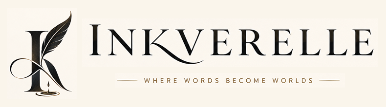

Featured · Reflection
The art of
paying attention
On noticing what the day leaves at your doorstep: light on the kitchen floor, the neighbor's lavender, a thought that finally found its way home.
Read the piece↗
A journal for the in-between
A quiet home for stories, poems, and small observations about being here. Come in, take your time.
Settle into a storyFeatured · Reflection
On noticing what the day leaves at your doorstep: light on the kitchen floor, the neighbor's lavender, a thought that finally found its way home.
Read the piece↗POETRY
FOR THE
QUIET HOURS
An original poem · 14 min read